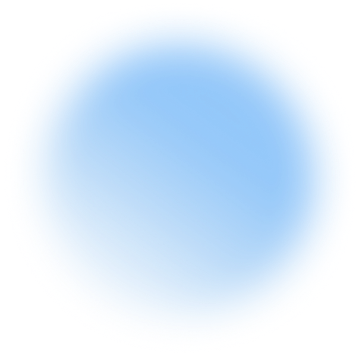

Party Up
Намери маса за настолна ролева игра — масите дърпат играчите, не обратното.
Десетки сайтове ти помагат да намериш половинка. Защо няма такъв за хората около масата?
Find your soulmate? Why not find your tabletop mates?
Party Up е обява за маса, не обява за играч. Водещият описва какво се играе, кога и с кого, а играчите избират маса, вместо да чакат някой да ги намери. За всеки, който има кампания без хора или свободна вечер без кампания.
Помогни да се разчуе
Такива мрежи работят с хора, не с реклама. Ако познаваш някого, който търси маса или играчи — кажи му. Сподели връзката в групата си, покажи я на водещия, с когото играеш.